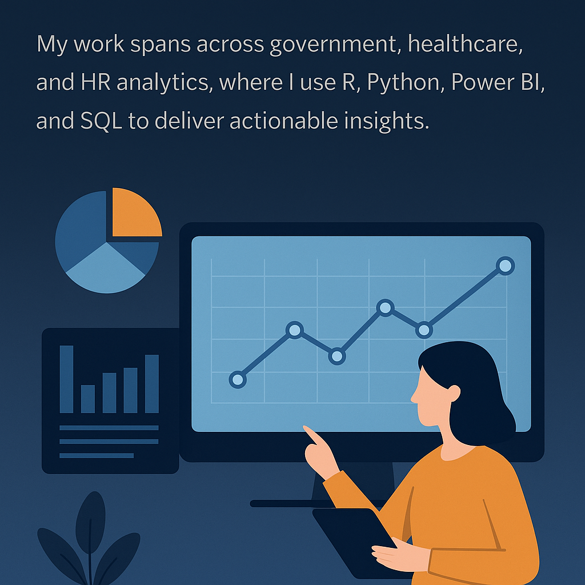

Below are examples of key projects I have contributed to across different sectors.
Pay Equity Analysis (DEFRA)
Led analysis of pay disparities across gender, ethnicity, age, and grade using GLM and ANOVA; built statistical models and dashboards to support HR policy and equity strategy.
Population Estimates (ONS)
Contributed to Admin-Based Population Estimates team, building models from census and administrative datasets in R to support national statistics.
Environmental Data Analysis (Map Impact)
Used geospatial and remote sensing data to analyse environmental patterns, including correlation between temperature and algal blooms in Windermere Lake.
Healthcare Risk Modelling (OBH)
Analysed NHS Digital and EHR data, producing mortality risk forecasts for COVID-19 using statistical and predictive modelling techniques.
Public Health Reporting (UKHSA)
Automated weekly NHS Test & Trace statistical reports; queried large datasets with SQL to generate critical pandemic insights.
Customer Churn & Business Analytics (Domestic & General)
Applied statistical techniques to identify drivers of customer churn and developed Power BI dashboards for business trend analysis.
Vehicle Safety Modelling (Thatcham Research)
Modelled motor insurance claims to assess impact of Autonomous Emergency Braking on accident rates; findings published at ESV conference.